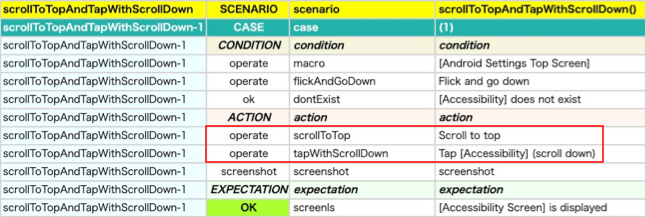
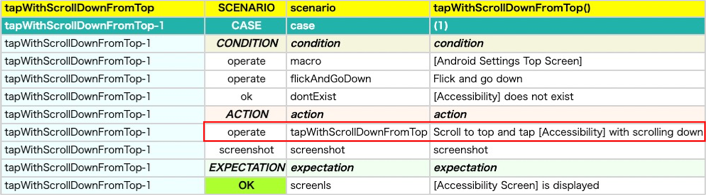

Creating your own operation function
You can create your own operation function with extension function.
Example
CreatingCommandFunction1.kt
In the action block of the following test code, two actions are executed by two operation functions.
@Test
@Order(10)
fun scrollToTopAndTapWithScrollDown() {
scenario {
case(1) {
condition {
it.macro("[Android Settings Top Screen]")
.flickAndGoDown()
.dontExist("[Accessibility]")
}.action {
it.scrollToTop()
.tapWithScrollDown("[Accessibility]")
}.expectation {
it.screenIs("[Accessibility Screen]")
}
}
}
}
Html-Report

If you want to combine two function into one function, you can define extension function for any type using TestDriverCommandContext#execOperateCommand function.
Note: No-Load-Run mode and other features are supported in execOperateCommand function.
CreatingCommandFunction1.kt
private fun TestDrive.tapWithScrollDownFromTop(
expression: String,
scrollDurationSeconds: Double = testContext.swipeDurationSeconds,
scrollStartMarginRatio: Double = testContext.scrollVerticalMarginRatio,
holdSeconds: Double = testContext.tapHoldSeconds,
tapMethod: TapMethod = TapMethod.auto
): TestElement {
val command = "tapWithScrollDownFromTop"
val sel = testContext.screenInfo.expandExpression(expression = expression)
val message = "Scroll to top and tap $sel with scrolling down"
val context = TestDriverCommandContext(this.testElement)
context.execOperateCommand(command = command, message = message) {
scrollToTop()
tapWithScrollDown(
expression = expression,
scrollDurationSeconds = scrollDurationSeconds,
scrollStartMarginRatio = scrollStartMarginRatio,
holdSeconds = holdSeconds,
tapMethod = tapMethod
)
}
return last
}
@Test
@Order(20)
fun tapWithScrollDownFromTop() {
scenario {
case(1) {
condition {
it.macro("[Android Settings Top Screen]")
.flickAndGoDown()
.dontExist("[Accessibility]")
}.action {
it.tapWithScrollDownFromTop("[Accessibility]")
}.expectation {
it.screenIs("[Accessibility Screen]")
}
}
}
}
Html-Report

Using the function you have created, you can combine the two functions into one.